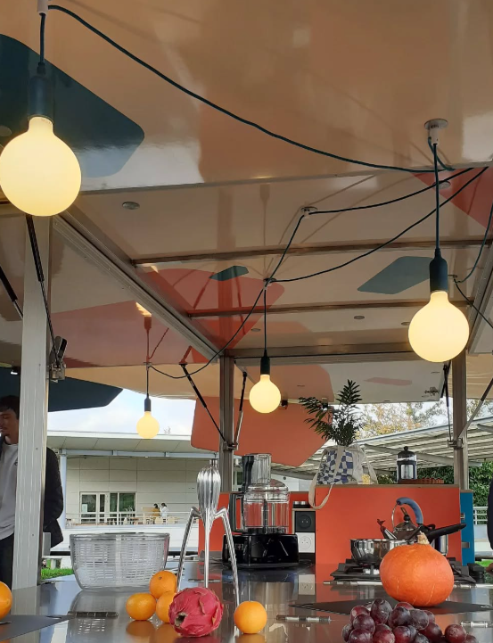
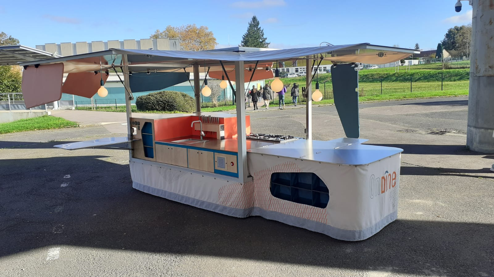
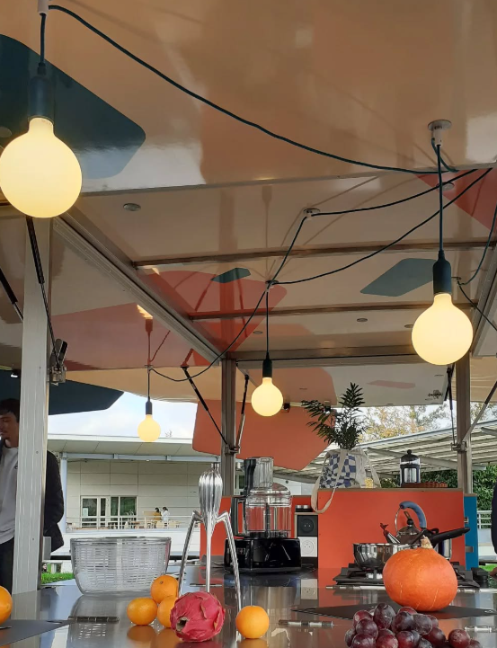
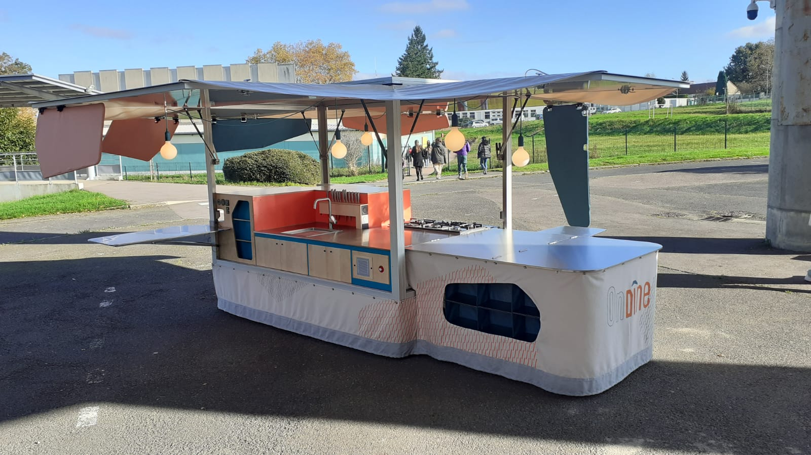

Ce portfolio présente une sélection
de projets personnels et professionnels.
Entre design d’objet et scénographie,
je cherche à donner du sens aux formes du quotidien.
 



Ondine est le nom donné à notre intrépide unité mobile. Cette cuisine a pour unique but de sillonner les villes. Allant de marché en marché, elle restaure et initie les habitants de notre contrée avec de bon petits plats à reproduire à la maison.
Ce trajet emmène les visiteurs vers un univers toujours plus intime, du jardin au grenier, en passant par la bibliothèque et les chambres. L’enfance de Colette vous est contée dans ses moindres détails. Quelques gestes simples comme ouvrir un tiroir, feuilleter un livre ou manipuler des objets créeront une immersion plus vraie que nature. Pour finir sur une touche de douceur et de repos, la visite s’achève dans une bibliothèque participative.

La 3d est un outils qui me permet d’explorer les volumes, la lumière et les ambiances afin de donner vie à des objets et des espaces imaginés. À travers la 3D, je donne forme à des idées encore immatérielles.